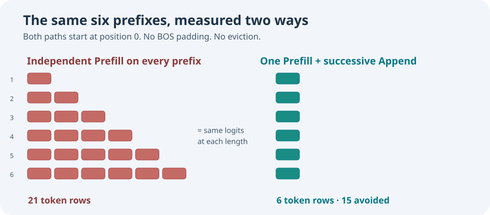

Learning objectives
By the end, you should be able to distinguish a growing token prefix from a rolling context window, calculate the rows computed by each approach, explain why parity is possible here, and state what this experiment does not establish.
1. Recall why the previous experiment found no row saving
In Lesson 67, our eight-position decoder always received a full eight-token context. When its prompt was short, reserved beginning-of-sequence (BOS) tokens filled the unused positions on the left. Once a token was generated, the oldest position was discarded and the remaining seven tokens shifted left. With learned absolute positional embeddings, this shift changes the input representation of every retained token. Previously computed keys and values are then stale and must be rebuilt.
That result remains true. We are not silently changing how Umicom's canonical generator works.
2. A different workload: observe a prefix as it grows
Now start with the tokens at positions 0, 1 and 2, without left padding. Inspect the prediction after the first token, after the second, then after the third. Continue until the available context is full. The original token in position 0 never moves; its embedding and its attention key/value remain valid as later tokens arrive. Because causal attention does not let an earlier token attend to a future token, the earlier keys and values need not be calculated again.

3. Work through the arithmetic
For six inspected prefixes, repeated independent computation needs 1 + 2 + 3 + 4 + 5 + 6 = 21 token rows. Keeping the same cache needs one row for each newly appended token: 6 rows. That avoids 15 rows, or approximately 71.4% of the row computation count.
For a prefix length N, provided 1 <= N <= contextLength, the independent approach computes N × (N + 1) / 2 rows. The incremental approach computes N. The difference is N × (N - 1) / 2.
These are counts of model-token rows, not floating-point operations, bytes read, elapsed time, or a guaranteed speedup factor. Longer prefixes perform more attention operations per new row. A cache also occupies memory.
4. Reuse the existing Framework ownership model
We do not need a new Transformer implementation. The Framework already provides UmiAiTrainingKvCachePrefill and UmiAiTrainingKvCacheAppend. The first computes the initial prefix from position zero. As long as its context has room, Append computes only the new row and reuses existing keys and values. Once capacity is reached, the existing cache correctly rebuilds the window after eviction.
#include "umicom/ai/training/kv_prefix_reuse.h"
/* decoderConfig is a valid model configuration already in use. */
UmiAiTrainingKvPrefixWorkEstimate estimate = {0};
UmiStatus status = UmiAiTrainingKvPrefixWorkEstimateBuild(
&decoderConfig, 6U, &estimate);
if (status == UMI_STATUS_OK) {
/* 21 independent rows, 6 incremental rows, 15 avoided. */
}The function uses the existing shape-aware cache allocation planner. Invalid dimensions, excessive prefixes or missing output pointers are rejected without changing the caller's result.
5. What this does not change
The canonical text generator still uses full BOS-padded contexts and its original positional semantics. No token IDs, checkpoints, trained parameters or random sampling rules change. This is an opt-in prefix-logit laboratory, not a drop-in performance upgrade for existing text generation. It demonstrates exactly which future streaming inference workload can benefit from the current model.
Practice exercises
- Calculate both row totals for nine prefixes. What fraction of rows is avoided?
- Explain why a token at position 2 can keep its K/V values after a token is appended at position 5.
- Explain why you cannot simply carry that same cache forward when the position-0 token is evicted.
- Does “15 fewer token rows” mean “71.4% less wall-clock time”? Identify two other costs.
Key lesson: Optimisations depend on precise invariants. Prefix reuse is valid while token positions remain fixed; a moving absolute-position window is a different problem.